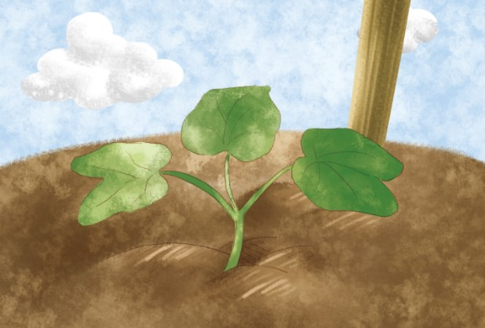

Growing a Seed
Do you know how a seed grows ?
See the pictures and click the correct answer.
See the pictures and click the correct answer.
1.Plant a
seed
flower
into a hole.

2.Cover the seed with
water
soil
.

3.Sprinkle the seed with a little
water
sand
.

4.Bake the seed in the
snow
sun
.

5.The little seed is ready to
grow
flow
.

6.Little
stem
flower
grows every day.

7.The stem
jump
climbs
up to pole.
8.The flower bud is ready to
open
close
up.